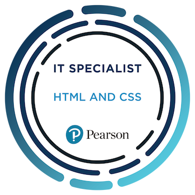
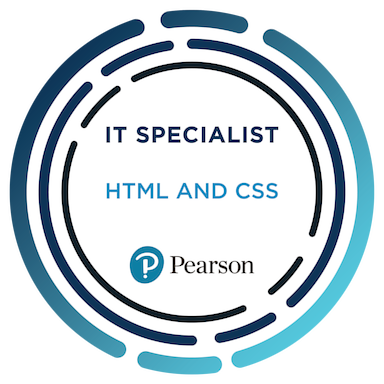

ChambeusTech
A Chambeus Coding Production
Certification Badge
For all the skeptical nerds that dont believe I am a ceritified Web Designer
HTMLAbout Me
Hello, my name is Jordan Chambers, and I am an aspiring and dedicated software developer with over two years of hands-on programming experience, along with about one year of employment experience. I am passionate about computers, software development, and the evolving landscape of technology. My long-term goal is to build a thriving career in computer science or cybersecurity, ultimately earning a six-figure role doing what I love most—creating meaningful, innovative solutions through code. I am currently certified as an HTML and CSS Web Designer and actively pursuing additional certifications in Java, Python, Data Analytics, C#, and Cybersecurity. I believe that continual learning and skill development are essential in this fast-paced industry, and I strive to stay ahead by consistently expanding my technical knowledge and toolkit. I am also the lead developer of an original retro-inspired RPG video game built using GDScript and C#. The game, heavily influenced by classics such as The Legend of Zelda: A Link to the Past, is currently five months into development. This passion project has sharpened my skills in game design, object-oriented programming, problem-solving, and cross-discipline collaboration. Academically, I am preparing to pursue a degree in either Computer Science or Cybersecurity from one of several competitive institutions, including Michigan Tech University, Ferris State University, Northwood University, or Delta College. My focus will be on strengthening both my theoretical understanding and practical capabilities to better position myself for future leadership and development roles in the tech industry. In every project I take on, I bring enthusiasm, curiosity, and a commitment to excellence. Whether it's building web applications, developing video games, or exploring the intricacies of cybersecurity, I am driven by a genuine love for technology and a desire to make a meaningful impact.
Skills
- HTML, CSS, JavaScript
- Python, Java
- C#, GDScript (Game Development)
- GitHub, GitHub Pages
Projects- The Crimson Debt
I am currently developing a retro-inspired RPG using GDScript and C#, inspired by classics like The Legend of Zelda. It’s five months into development and has sharpened my Godot Engine and game design skills.
What's Next?
I am taking a Cybersecurity class next year to widen my range in tech knowledge and Im going to get many certifications in that class indeed! Then I will be going into a Computer Science degree along with a paid apprenticeship hopefully!
Resume
If you are looking to hire me then here is a link to my resume My Resume